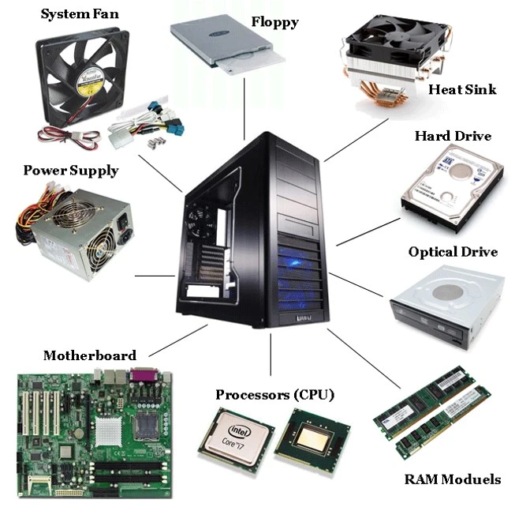

Een moederbord is de grootste printplaat in een computer en fungeert als de basis van het systeem. Het verbindt verschillende componenten van de computer, zoals het geheugen, de processor, de harde schijf en andere apparaten. Het moederbord bevat ook aansluitingen voor toetsenborden, muizen, USB-poorten, beeldschermen, netwerken en geluid. Het is een soort stroomdraadje dat alle onderdelen met elkaar verbindt.
Een Power Supply Unit (PSU) is een essentieel onderdeel van een computer omdat het zorgt voor een stabiele en betrouwbare stroomtoevoer naar alle andere componenten . De meeste moderne desktopcomputers gebruiken ATX-voedingen die voldoen aan de ATX-specificatie, die de afmetingen, de montagepunten, het I/O-paneel en de stroom- en connectorinterfaces tussen een computerbehuizing, een moederbord en een voedingseenheid definieert
